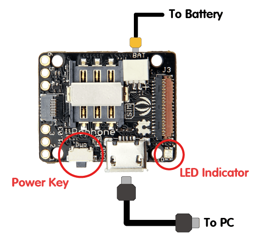
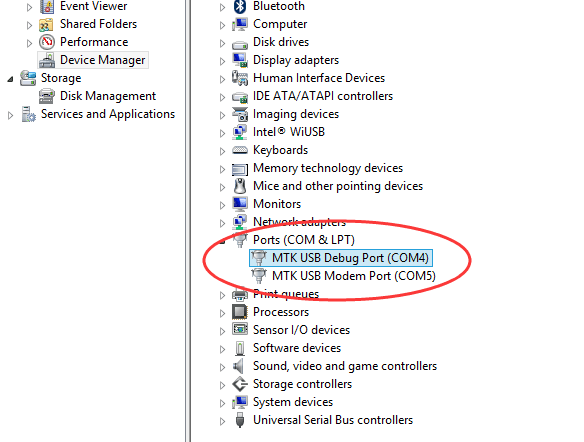

RePhone can be a learning tool for you to start interesting projects. Currently, RePhone supports various development environment and development languages, you can either built applications with C/C++ based on Eclipse IDE, Arduino IDE, or with Lua and JavaScript.
This wiki is a User Guide to help you start your RePhone project with Lua.
Step 1. Click the following icon to our github for downloading the 'Lua for RePhone application'
Step 2. Click lua_for_rephone_xxx.zip to download
Step 3. Set your RePhone into storage mode by plugging in the battery and connect it to PC with a Micro USB cable.

Step 4. Unzip the lua_for_rephone_xxx.zip file into the 5MB disk of RePhone, you can also put some music files (mp3 format) into the disk. Here I've put the 'music1.mp3' and 'music2.mp3' in it.
<br /
Step 1. Now press and hold the power key of your RePhone (Xadow GSM+BLE, see the diagram above in step 3 of section 2) for 2 seconds to turn it on, then identify the COM number for the serial port, which will be MTK USB Modem Port showing in the Device Manager, also please be noted that the COM number might be different on different PC.
Open Device Manager by clicking the Start button, clicking Control Panel, clicking System and Security, and then, under System, clicking Device Manager. If you're prompted for an administrator password or confirmation, type the password or provide confirmation. See the following image:

Step 2. We use a serial terminal tool such as PuTTY to access the Lua shell running on the RePhone.
If you use PuTTY, please remember to enable "implicit CR in every LF" option. Otherwise, line breaks will be weird. As Lua shell of RePhone use LF ('\n') as EOL, while PuTTY uses CR LF ("\r\n") as default EOL.
Step 3.Open the MTK USB Modem Port (its baudrate doesn't matter as it is a USB virtual serial port) and type "print('hello, world')", you will get your first Lua code running on the RePhone.
If you have some music files in the RePhone, type "audio.play('music.mp3')" to play it. If you have a SIM card inserted, type "gsm.call('phone_number')" to call someone or "gsm.text('phone_number', 'message from rephone')" to send a text message.
1. play a music repeatly
function play_music() audio.play('music.mp3') end t = timer.create(10000, play_music)
2. auto-reply message
function reply(from, content) print('got a message:', content) print('from:', from) gsm.text(from, 'Thanks for your message') end gsm.on_new_message(reply)
We’ve been looking for a better place where our backers (RePhone Users) can sit together, warmly and comfortably, have conversations about RePhone, discuss technical problems, share ideas/projects, and give feedback on the modules’ development in the future. And then here we go, the RePhone Community.
Now join us in the RePhone Community!
Together we seek answers, make interesting stuff, care about each other, and share our experiences.
1. Source Code of Lua for RePhone
Copyright (c) 2008-2016 Seeed Development Limited (www.seeedstudio.com / www.seeed.cc)